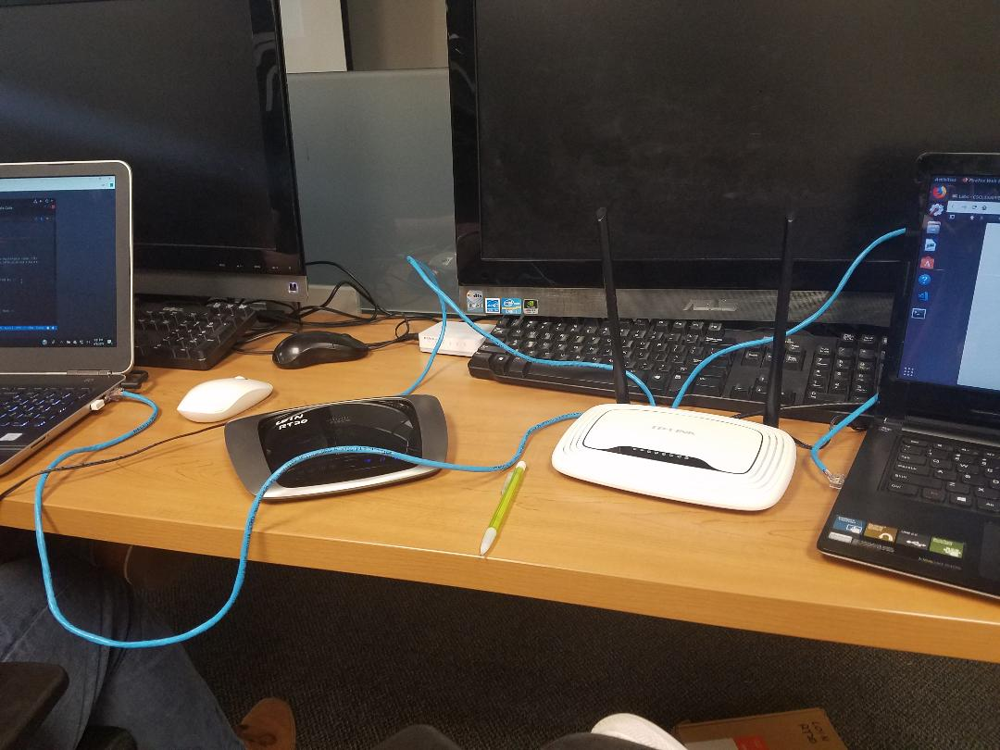

1. In order to construct a LAN using two switches and two computers
-
We plugged in an ethernet cable from one computer to one router in port
1
-
Then an ethernet cable from one router to the other router with port 2s
-
Finally from the other router to the other computer in that router's
port 1
-
We then changed the IP address on one of the routers (The Cisco one)
-
We confirmed that one of the routers IP addresses had been changed. This
is where the issues started.
Here is the picture of our setup

Unfortunately this is the farthest we got on the Two Switch LANs. We had
no issue changing the IP address but we could not figure out how to get
the file sharing to work since the two routers had different IP addresses.
We were not able to perform the experiment because we could not figure out
a way to get the file sharing to work.
Home